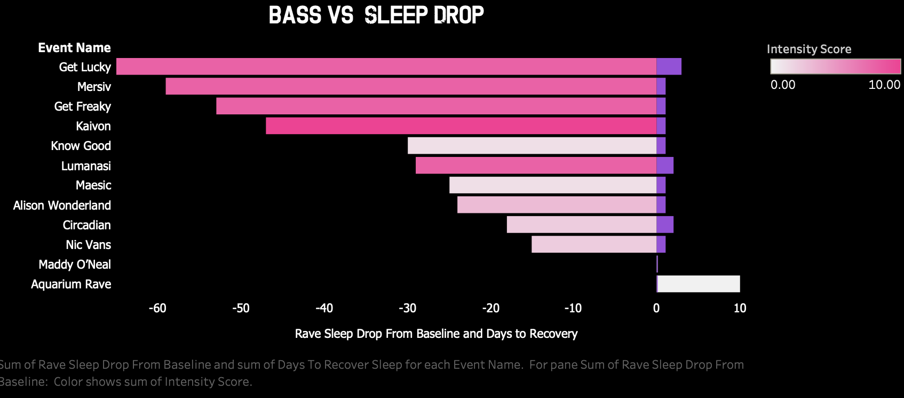
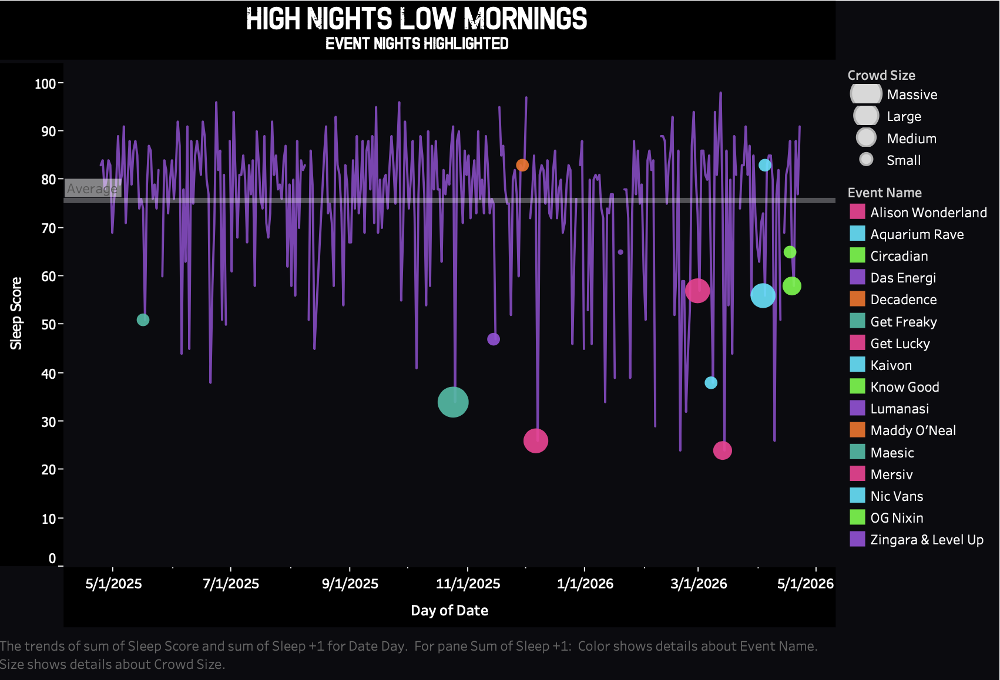

Behavioral Health Analyticsv
This project uses a self-collected dataset as a prototype to explore how behavioral and contextual variables—often missing from wearable or claims data—affect recovery outcomes. By combining event-level inputs with sleep data, the analysis tests whether small, messy datasets can still produce meaningful predictive signals.
Event intensity vs next-day recovery

Higher intensity events generally led to larger drops in next-day sleep relative to baseline, but not always.
Events on Sleep Score

Sleeps following music events dropped below average 83% of the time.
Movement vs energy next day

High movement nights didn’t always mean worse recovery — suggesting context matters more than raw exertion.
The question
How much does event intensity affect next-day sleep, how long does recovery take, and can a small personal dataset still produce useful predictive signals?
Note: Behavioral variables (including substance intensity) are self-reported and used as exploratory inputs to better understand recovery context.
Walk through the analysis.
Click through each layer of the project: framing, data design, dashboard choices, and interpretation.
Problem framing
Most personal health data is collected passively but rarely interpreted in context. This project asks whether event-specific variables — intensity, substance intensity, baseline sleep, environment, and embodiment — can explain patterns in next-day sleep and recovery.
Data structure
The dataset is built at the event level and joined to sleep exports by date. Key fields include event type, genre, crowd size, density, visual intensity, substance intensity, embodiment, energy before, sleep baseline, next-day sleep, and recovery days.
Dashboard design
The dashboard uses compact comparisons to show how event intensity relates to sleep impact and recovery. The visual style mirrors the subject matter while keeping the analytical structure readable.
Predictive modeling
Because the dataset is small, I used leave-one-out cross-validation instead of a standard train/test split. I compared simple linear models against random forest models to test whether nonlinear complexity improved prediction.
Interpretation
Early findings should be treated as exploratory, not causal. The goal is not to prove one variable “causes” recovery, but to generate better questions and identify patterns worth tracking as the dataset grows.
How I built it.
1. Designed the event schema
Created a structured data dictionary for subjective, environmental, social, and wearable-derived variables.
2. Joined by date
Connected event dates to post-event sleep windows, including baseline sleep, next-day sleep, and recovery days.
3. Created derived metrics
Built an intensity score, sleep drop from baseline, days to recover, and a high-value-night indicator.
4. Modeled outcomes
Used leave-one-out validation to compare linear regression and random forest models for sleep and recovery outcomes.
What this project shows.
Insight 1: Intensity strongly predicts sleep impact.
Higher intensity events were associated with larger next-day sleep drops from baseline. The simple intensity model explained about 76% of the variance in sleep impact.
Insight 2: Substance intensity is a key recovery signal.
Substance intensity was associated with longer recovery time and carried most of the predictive weight in the sleep-after-rave random forest model.
Insight 3: Simple models performed as well as complex models.
Random forest models did not meaningfully outperform linear models, suggesting the current signal is mostly linear and driven by a small number of variables.
Model performance
| Outcome | Linear MAE | Random Forest MAE |
|---|---|---|
| Sleep after rave | 11.31 | 11.02 |
| Sleep impact from baseline | 11.31 | 11.04 |
| Recovery time | 0.73 | 0.77 |
Regression models were evaluated with mean absolute error using leave-one-out cross-validation.
Reproducible analysis.
The full Jupyter notebook includes the cleaning pipeline, feature engineering, intensity score methodology, model validation, feature importance, and prediction function.
Open the notebook
Review the Python workflow behind the case study, including the sleep join, derived metrics, leave-one-out validation, and final scenario simulator.
View Python Notebook